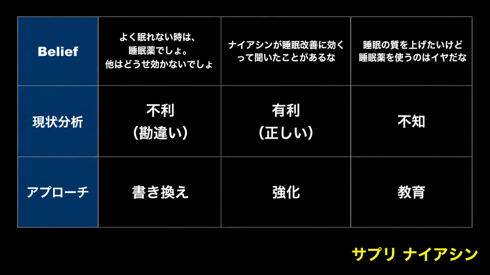

BDF顧客リサーチ
記事制作・レビューで、ユーザーが何を信じ、何を望み、何が怖くて止まっているかを見るための共有資料。
この資料で見ること
BDFは、顧客リサーチで集めた情報を「教育」「訴求」「懸念払拭」に変えるための物差しです。
商品認知度では、ユーザーが問題・解決策・商品をどこまで知っているかを見ます。BDFでは、その状態のユーザーが何を信じ、どんな未来を望み、何に不安を感じて行動を止めているかを見ます。
2つを合わせると、FVやアンケートで何から話し始めるか、記事内で何を教育するか、CTA前にどの不安を払拭するかを考えやすくなります。
記事を見るときの目的
ユーザー理解を一般論で終わらせず、記事の入口・訴求・教育・FAQ・CTAのどこを変えるかまでつなげます。
最重要の前提: 問題に気づいていないと商品は売れにくい
ユーザーは、自分の問題を解決するために商品を買います。肌荒れ用のクリームを買うのは、肌が荒れているという問題を解決したいからです。
そのため、顧客リサーチでは「ユーザーが抱えている問題」だけではなく、「今回売る商材で解決できる問題」と「ユーザー本人がその問題を自覚しているか」を分けて確認します。
制作前の問い
この商材が解決できる問題は何か。その問題をユーザーはすでに自覚しているか。自覚していないなら、記事のどこで「自分にも関係がある問題かもしれない」と気づいてもらうか。
解決策・証拠・比較・オファーを比較的まっすぐ見せやすい。
日常の違和感、診断、ストーリー、意外な事実などを使い、先に問題を自分ごと化してもらう必要がある。
BDFの全体像
思い込み・信念。ユーザーが問題、解決策、商品ジャンルについて「当たり前」だと思っていることを見る。
欲求・願望・悩み・問題。叶えたい未来と避けたい未来のどちらが強いかを見る。
商品や業界に対する気持ち・イメージ。興味があっても行動を止める感情的な懸念を見る。
1. Belief: ユーザーの思い込みを見る
Beliefは、商品ジャンル、問題、解決策、商品に対して、ユーザーが信じていることです。事実として正しいかどうかではなく、本人の中で常識になっているかを見ます。
記事制作では、Beliefを売る側から見て「不利」「有利」「どちらとも言えない」の3つに分けます。分類によって必要なアプローチが変わるためです。
例えば、具体例で見ると次のようになります。
具体例：睡眠の質を上げるナイアシン系サプリを売る場合

Beliefを記事に使うとき
まず、ユーザーが今どのBeliefを持っているかを仮置きします。そのうえで、CTAまでに「何を信じられる状態になってほしいか」を決め、書き換え（新認知）・強化・教育のどれが必要かを選びます。
社内では、ユーザーがこれまで信じてきたことに対して、「実は別の見方・考え方・知識がある」と伝え、Beliefを書き換えることを「新認知」と呼びます。
2. Desire: 売れる訴求の方向を決める
Desireには、欲求、願望、夢、悩み、問題、恐怖、不安、フラストレーションなどが含まれます。調べるときは項目を並べるだけではなく、大きく「叶えたい未来」と「避けたい未来」に分けます。
ゼロからプラスへ行きたい欲求。理想の姿、憧れ、褒められたい、恋愛や仕事で前向きになりたい、など。
マイナスをゼロ、またはプラスへ戻したい欲求。不安、コンプレックス、恥ずかしさ、嫌われる恐怖、将来の後悔、など。
美容医療やコンプレックス商材では、すでにあるマイナス状態から考えると、ユーザーが自分ごと化しやすい場合があります。ただし、ネガティブ訴求だけで終わらせず、その問題が解決した先の生活や感情まで見ます。
例: ニキビ商材で見るDesire
「ニキビを治したい」だけで終わらせず、清潔感がないと思われたくない、好きな人に近づく自信が持てない、肌を褒められて恋愛に前向きになりたい、といった生活・感情の変化まで見ます。
3. Feeling: CTA前の懸念を払拭する
Feelingは、商品や業界に対する気持ちや、なんとなく持っているイメージです。ユーザーが商品に興味を持っていても、「怖い」「恥ずかしい」「信用できない」と感じていれば行動を止めます。
部内で使っている「情緒的価値」や「懸念払拭」と接続しやすい観点です。
- 痛そう
- 高そう
- 売り込まれそう
- 自分の年齢で行くのは恥ずかしい
- クリニックで浮きそう
- 不自然になりそう
- 料金の透明性を見せる
- 無料相談が何をする場なのかを伝える
- 同年代や同性の利用イメージを置く
- 相談や施術の流れを見せる
- 痛みやダウンタイムを説明する
- FAQ、症例、医師説明で懸念に答える
CTA前の役割
論理的に説明するだけではなく、文章、画像、相談風景、同年代の利用イメージ、FAQなどを使い、「自分でも相談できそう」「思っていたほど怖くなさそう」と感じてもらうところまで設計します。
記事制作での使い方
ユーザーの悩みを広く集めたうえで、今回売る商材が実際に解決できる問題へ絞る。
自覚しているなら解決策へ進みやすい。自覚していないなら、記事の入口で問題教育が必要になる。
FV、アンケート、診断、共感、ストーリー、意外な事実などから、適した入口を選ぶ。
不利・有利・どちらとも言えないに分け、書き換え（新認知）・強化・教育のどれが必要か決める。
叶えたい未来と避けたい未来のどちらを前に出すと、今回のユーザーが自分ごと化しやすいか考える。
痛み、金額、売り込み、年齢不安、場違い感、不自然さなど、CTA前に残る感情的なブレーキを確認する。
FV、アンケート、教育、証拠、画像、FAQ、CTAのどこで何を伝えるかを決める。
明日から記事を見る観点
- BBelief: ユーザーが信じていることは、販売に不利・有利・どちらとも言えないのどれか。書き換え（新認知）・強化・教育のどれが必要か。
- DDesire: 前に出している訴求は、叶えたい未来と避けたい未来のどちらか。今回のユーザーが動きやすい方向になっているか。
- FFeeling: CTA前に、痛み・金額・売り込み・年齢不安・場違い感などの懸念が残っていないか。
商品認知度と合わせて確認する
このユーザーには何から話し始めるべきか。CTA前に何を理解・納得している必要があるか。最後にどんな不安が残るか。この3点まで記事の具体的な変更へつなげます。